언제 어디서나,
물고기 상태 추적하기
물고기 상태 추적하기
스마트폰 하나로 언제 어디서든 쉽고 빠르게 접근하여 물고기의 바이탈과 환경 정보를 확인할 수 있습니다.
지식 없이도 누구나,
그리고 쉽게
그리고 쉽게
물고기에 대한 지식이 없어도 누구나 참여할 수 있습니다.
정교하게 짜여진 물고기 생태 알고리즘과 AquaOPT의 빅데이터 기술을 통해 간단한 어플리케이션 조작만으로도 쉽게 양어 프로세스에 참여하도록 설계되었습니다.
정교하게 짜여진 물고기 생태 알고리즘과 AquaOPT의 빅데이터 기술을 통해 간단한 어플리케이션 조작만으로도 쉽게 양어 프로세스에 참여하도록 설계되었습니다.
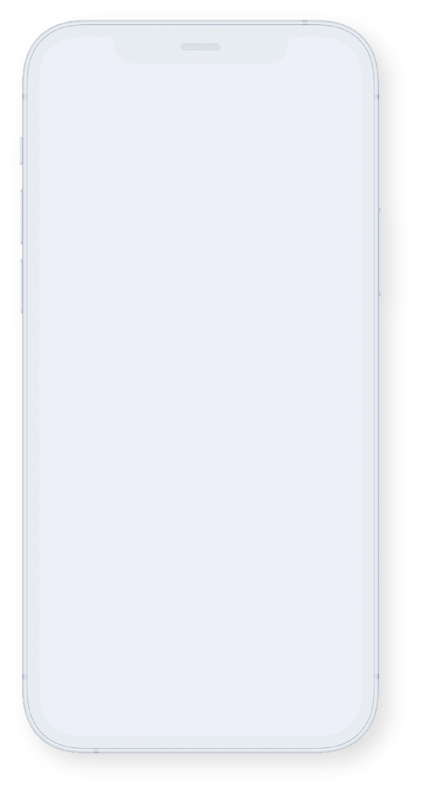
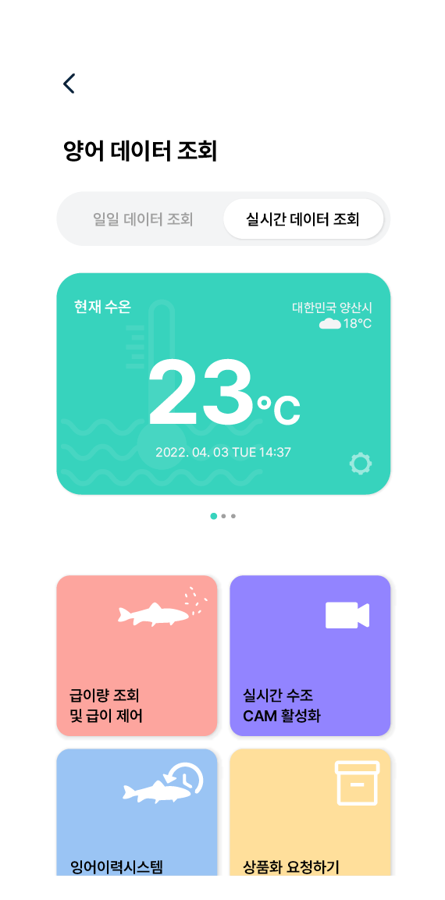
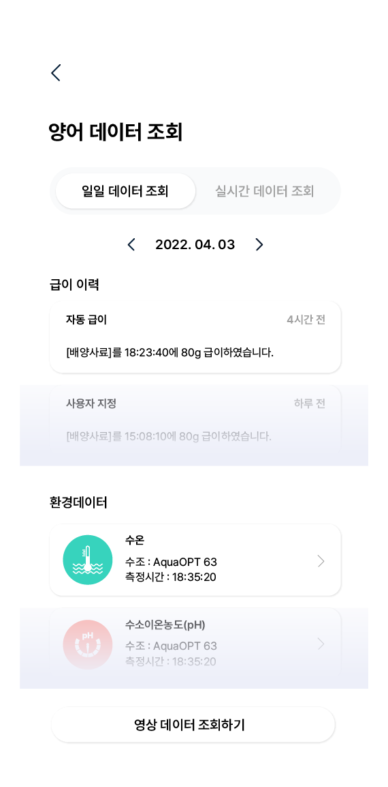
직접 확인하고
더욱 안심할 수 있도록
더욱 안심할 수 있도록
소비자가 직접 참여하여 모든 양어 데이터를 확인하고, 직접 생태 환경 조성에 기여하기 때문에 안심하고 소비할 수 있습니다.
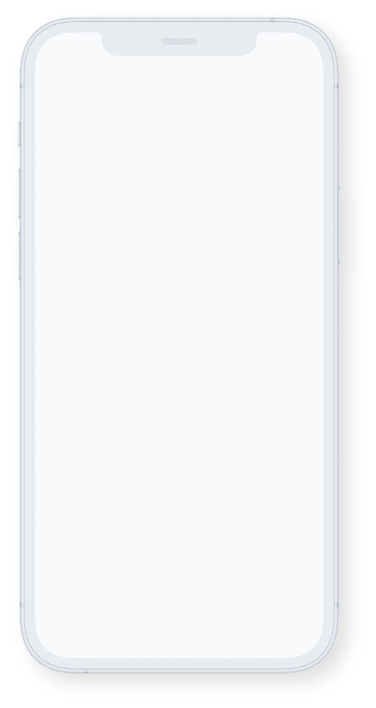
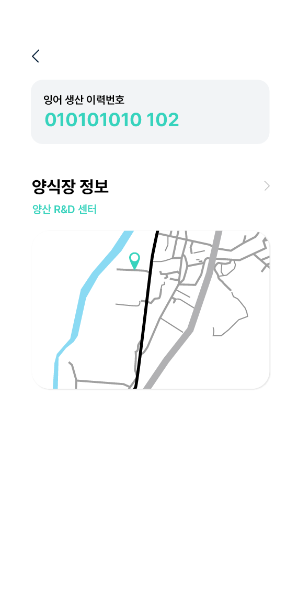
더 많은 소비자에게
쉽게 다가갈 수 있게
쉽게 다가갈 수 있게
생산되는 모든 수산물에 대한 투명한 정보 공개와 사용자의 참여 유도는 양어 농가에게 더 많은 기회와 시장 확대의 발판이 될 것 입니다.
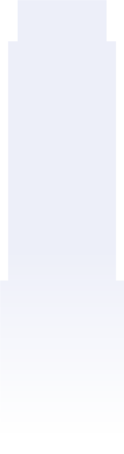
